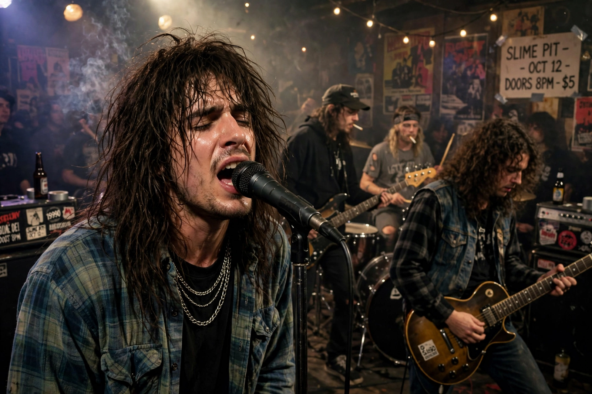

| Soundgarden | |
|---|---|
 | |
| Origin | Seattle, Washington, U.S. |
| Years active | 1984–1997, 2010–2019 |
| Genres | Grunge, alternative metal, alternative rock, heavy metal |
| Labels | Sub Pop, SST, A&M |
| Members | Chris Cornell, Kim Thayil, Ben Shepherd, Matt Cameron, Hiro Yamamoto |
Soundgarden was an American rock band formed in Seattle, Washington, in 1984 by singer and drummer Chris Cornell, guitarist Kim Thayil and bassist Hiro Yamamoto. One of the creators of grunge music, Soundgarden was the first grunge band to sign to a major label (A&M Records in 1989) and achieved its biggest success with the 1994 album Superunknown, which included the Grammy-winning singles "Black Hole Sun" and "Spoonman".
The band took its name from a wind-channeling pipe sculpture, A Sound Garden, on the grounds of the NOAA facility in Seattle. Early releases on Sub Pop and SST, including the debut album Ultramega OK (1988), built a following for their heavy, detuned sound influenced by Black Sabbath and Led Zeppelin. Louder Than Love (1989) and Badmotorfinger (1991) — featuring "Rusty Cage" and "Outshined" — rode the grunge explosion sparked by Nevermind.
Superunknown debuted at number one in the US and sold millions worldwide. Its follow-up, Down on the Upside (1996), was less successful, and internal tensions led to a breakup in 1997. The band reunited in 2010 and released King Animal in 2012. Cornell died in May 2017 hours after a show in Detroit; the remaining members formally disbanded in 2019.
Soundgarden sold more than 30 million records worldwide and is counted, with Nirvana, Pearl Jam and Alice in Chains, among the "big four" of Seattle grunge. Drummer Matt Cameron also serves as Pearl Jam's drummer.
Alice in Chains · Pearl Jam · Alternative rock · Pacific Northwest
From Wikipedia, the free encyclopedia (recreated from memory).